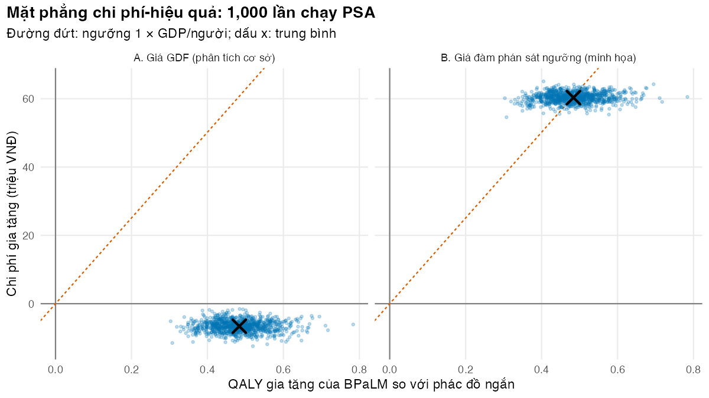
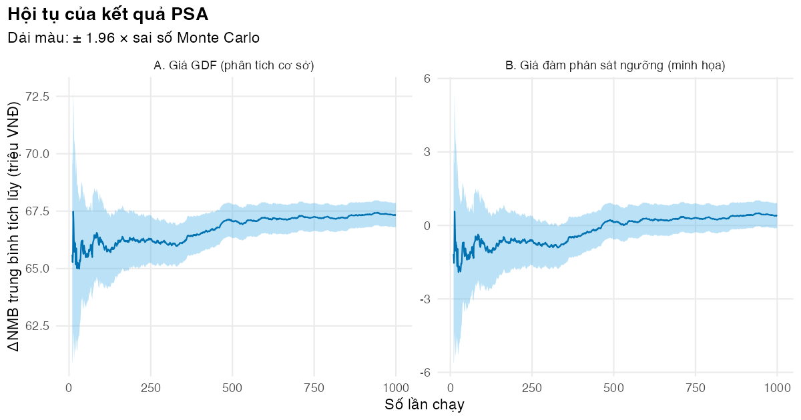

Rút mẫu, chạy mô hình M02 vectơ hóa theo các lần rút, đọc mặt phẳng chi phí-hiệu quả và kiểm tra hội tụ
Vì sao bạn nên quan tâm?
Riêng năm 2024, Bệnh viện Phổi Trung ương điều trị nội trú 629 người bệnh lao kháng thuốc (Nguyễn và Nguyễn 2025). Toàn bộ bằng chứng về hiệu quả của BPaLM trong mô hình lại chỉ đến từ 274 người đánh giá được trong TB-PRACTECAL, ít hơn số người của một bệnh viện trong một năm (Nyang’wa và c.s. 2024). Tỷ lệ thành công 76.2% của phác đồ ngắn lấy từ đoàn hệ toàn quốc mà tóm tắt bài báo không nêu cỡ nhóm (Nguyen và c.s. 2026), còn giá thuốc GDF vẫn đang giảm. Khi Sở Y tế hỏi “nếu mọi con số này cùng lệch đi một chút, BPaLM còn hơn phác đồ ngắn không, và trong bao nhiêu phần trăm trường hợp?”, PSA trả lời bằng cách rút 1,000 bộ giá trị cho 27 tham số bất định rồi chạy lại mô hình cho từng bộ. Bài này dạy làm việc đó đúng, nhanh và kiểm chứng được.
Mục tiêu học tập
Sau bài này, bạn có thể:
Tổ chức một phân tích độ nhạy xác suất (probabilistic sensitivity analysis, PSA) thành ba bước tách biệt: rút mẫu, chạy mô hình, tóm tắt.
Rút mọi mẫu bằng lệnh vectơ hóa, chạy mô hình bằng vòng lặp song song hoặc vectơ hóa theo các lần rút, và kiểm tra hai cách cho cùng kết quả.
Tóm tắt PSA bằng trung bình và khoảng bất định 95% (uncertainty interval), và vẽ mặt phẳng chi phí-hiệu quả (cost-effectiveness plane).
Kiểm tra hội tụ, tính sai số Monte Carlo và chọn số lần chạy.
Giải thích vì sao trung bình của PSA khác kết quả phân tích cơ sở.
Ý chính
PSA rút đồng thời \(N\) bộ tham số từ phân phối của chúng, chạy mô hình cho từng bộ, rồi tóm tắt phân phối của kết quả (Briggs và c.s. 2012).
Rút mọi mẫu trước vòng lặp, mỗi tham số một lệnh vectơ. Nhờ vậy kết quả tái lập được, chạy song song được, và nhiều kịch bản dùng chung một bộ mẫu.
Véc-tơ hóa được cả bước chạy mô hình: giữ một ma trận trạng thái \(N \times S\) cho mọi bộ tham số và chỉ lặp theo chu kỳ. Giữ bản vòng lặp (run_psa(), gọi run_cea() của M02) làm chuẩn và so từng hàng.
Quyết định dựa trên giá trị kỳ vọng của NMB, không dựa trên ý nghĩa thống kê (Claxton 1999). Phân phối kết quả cho biết quyết định bất định đến đâu.
Khoảng bất định 95% là phân vị 2.5% và 97.5% của kết quả PSA; nó không phải khoảng tin cậy.
Trên mặt phẳng chi phí-hiệu quả, tỷ lệ điểm nằm dưới đường ngưỡng \(\lambda\) chính là xác suất BPaLM đạt chi phí-hiệu quả ở ngưỡng đó (khi chỉ so hai phương án).
Sai số Monte Carlo của trung bình bằng \(\text{SD}/\sqrt{N}\). Vẽ trung bình tích lũy để thấy kết quả đã ổn định chưa (Hatswell và c.s. 2018).
Giá thuốc đàm phán là một biến quyết định: trong kịch bản B nó được cố định ở mọi lần chạy. Ở kịch bản A, giá GDF có bất định quy ước ±25% nên được rút từ phân phối.
Nội dung
Ba bước của PSA
flowchart LR S["Bảng PSA<br/>params/psa.csv"] --> F["fit_dist()<br/>tham số phân phối"] F --> D["draw_psa(): N × K số ngẫu nhiên<br/>set.seed một lần, vectơ hóa"] D --> R["run_psa_vec(): N bộ cùng lúc, lặp theo chu kỳ<br/>đối chiếu run_psa(): N lần run_cea() của M02"] R --> T["Tóm tắt: trung bình, khoảng 95%,<br/>mặt phẳng CE, hội tụ"] D -.->|"cùng bộ mẫu"| R2["chạy lại với giá cố định<br/>(kịch bản B)"]
flowchart LR
S["Bảng PSA<br/>params/psa.csv"] --> F["fit_dist()<br/>tham số phân phối"]
F --> D["draw_psa(): N × K số ngẫu nhiên<br/>set.seed một lần, vectơ hóa"]
D --> R["run_psa_vec(): N bộ cùng lúc, lặp theo chu kỳ<br/>đối chiếu run_psa(): N lần run_cea() của M02"]
R --> T["Tóm tắt: trung bình, khoảng 95%,<br/>mặt phẳng CE, hội tụ"]
D -.->|"cùng bộ mẫu"| R2["chạy lại với giá cố định<br/>(kịch bản B)"]
Tách ba bước có ba lợi ích. Thứ nhất, mọi số ngẫu nhiên sinh ra trong draw_psa() sau một lệnh set.seed(), nên kết quả không phụ thuộc vào thứ tự chạy hay số lõi. Thứ hai, bước chạy mô hình là tất định: cùng một hàng tham số luôn cho cùng kết quả, nên có thể chia các hàng cho nhiều lõi (parallel::mclapply(); trên Windows psa_cores() trả về 1 lõi) hoặc xử lý mọi hàng đồng thời. Thứ ba, hai kịch bản dùng chung một bộ mẫu (dùng chung số ngẫu nhiên, common random numbers), nên chênh lệch giữa chúng chỉ do điều ta thay đổi.
Véc-tơ hóa theo các lần rút
Với \(N\) bộ tham số, mỗi bộ có ma trận chuyển riêng nên không có một phép nhân ma trận duy nhất. Nhưng mỗi xác suất chuyển là một số, nên ta lưu một vectơ độ dài \(N\) cho mỗi xác suất và cập nhật cả cột trạng thái cùng lúc: ma trận trạng thái \(S_t\) có \(N\) hàng và một cột cho mỗi trạng thái của M02 (Tx1…TxD, ReTx, Cured, Failed, LTFU, Dead). Vòng lặp theo chu kỳ vẫn còn, vì chu kỳ sau phụ thuộc chu kỳ trước; vòng lặp theo lần rút thì mất. run_psa_vec() lấy đầu vào từng bộ bằng prepare_inputs() của M02, nên mọi luật của M02 (bpalm_death_rule, retx_outcome_rule) vẫn áp dụng. Nó gọi cột theo tên trạng thái, không theo vị trí, và dừng lại nếu M02 đổi tập trạng thái: khi M02 thêm trạng thái ReTx, bản cũ dùng vị trí cột đã âm thầm sai.
Tóm tắt kết quả
ICER để báo cáo là \(\overline{\Delta C} / \overline{\Delta Q}\) (tỷ số của các trung bình), không phải trung bình của \(N\) ICER: một ICER riêng lẻ không xác định khi \(\Delta Q\) gần 0, và ICER âm ở hai góc phần tư khác nhau triệt tiêu nhau vô nghĩa. Trung bình của \(\Delta\text{NMB}\) thì luôn bằng \(\lambda \overline{\Delta Q} - \overline{\Delta C}\).
Trung bình PSA thường lệch một chút so với phân tích cơ sở vì hai lý do: mô hình phi tuyến theo tham số (\(E[f(\theta)] \neq f(E[\theta])\)), và giá trị cơ sở không phải lúc nào cũng là trung bình của phân phối (với log-chuẩn, giá trị cơ sở là trung vị; Bài 2). Bài tập 3 tách hai nguồn này.
Hội tụ và sai số Monte Carlo
Trung bình của \(N\) lần chạy có sai số Monte Carlo \(s/\sqrt{N}\), với \(s\) là độ lệch chuẩn của kết quả giữa các lần chạy. Muốn sai số nhỏ hơn một mức chấp nhận \(\varepsilon\) thì cần \(N \geq (s/\varepsilon)^2\). Không có mức \(\varepsilon\) chung cho mọi bài toán (Hatswell và c.s. 2018); ở đây ta chọn giá trị minh họa \(\varepsilon\) = 0.01 \(\times \lambda\), tức là giá trị của 0.01 QALY ở ngưỡng. Tiêu chí theo phần trăm của trung bình sẽ thất bại khi trung bình gần 0, đúng như kịch bản B dưới đây.
Thực hành
Nạp hàm, tham số và khớp phân phối (Bài 2). Kiểm tra: không có lỗi.
# Vietnamese text in figures needs a UTF-8 locale (Rscript may start in the "C" locale)if (!isTRUE(l10n_info()[["UTF-8"]])) invisible(Sys.setlocale("LC_CTYPE", "en_US.UTF-8"))source("../_shared/R/helpers.R")source("../_shared/R/vn_data.R")source("code/model.R")library(ggplot2)inp <-load_m03_inputs()p <- inp$pspec <- inp$specu <- inp$ufit <-fit_dist(spec)
Rút 1,000 bộ tham số. Kiểm tra: xác suất trong [0, 1], chi phí và tỷ suất dương, các bộ Dirichlet có tổng bằng 1 (stopifnot); trung bình và SD mẫu lệch so với phân phối nhiều nhất bao nhiêu.
# All random numbers are drawn here, before any model rundraws <-draw_psa(fit, n = u$n_psa, seed = u$seed)dim(draws)
[1] 1000 27
# Checks: probabilities in [0, 1], costs and rates positive, Dirichlet rows sum to 1,# and sample means close to the distribution meansprob_cols <- fit$name[fit$family %in%c("beta", "dirichlet")]stopifnot(all(draws[prob_cols] >=0), all(draws[prob_cols] <=1),all(draws[fit$name[fit$family %in%c("gamma", "lognormal")]] >0),all(abs(rowSums(draws[fit$name[fit$family =="dirichlet"]]) -1) <1e-12))rel_dev <-abs(colMeans(draws) - fit$mean) / fit$mean# ... and sample SDs close to the SDs of the fitted distributionsrel_sd_dev <-abs(apply(draws, 2, sd) - fit$sd) / fit$sdround(c(max_rel_dev_mean =max(rel_dev), max_rel_dev_sd =max(rel_sd_dev)), 3)
Trung bình mẫu lệch tối đa 1.1% so với trung bình lý thuyết, đúng cỡ sai số Monte Carlo của 1,000 lần rút.
Chạy bản chuẩn: một lần run_cea() của M02 cho mỗi bộ tham số, chia cho nhiều lõi. Kiểm tra: đủ hàng, không có giá trị thiếu, chi phí dương, và chạy lại ba bộ đầu trên một lõi cho đúng kết quả cũ (stopifnot).
# Reference implementation: one run_cea() of M02 (three regimens) per draw, split over cores.t_one <-system.time(for (i in1:10) run_cea(p))[["elapsed"]] /10n_cores <-psa_cores()t_psa <-system.time(psa_loop <-run_psa(p, draws, cores = n_cores))[["elapsed"]]round(c(seconds_one_run = t_one, cores = n_cores, seconds_psa = t_psa), 2)
seconds_one_run cores seconds_psa
0.06 8.00 7.62
stopifnot(nrow(psa_loop) == u$n_psa, !anyNA(psa_loop), all(psa_loop[grep("^cost_", names(psa_loop))] >0))# The number of cores does not change the results: rerun three draws on one corestopifnot(isTRUE(all.equal(run_psa(p, draws[1:3, ], cores =1), psa_loop[1:3, ], check.attributes =FALSE)))# first three runs: costs in million VNDround(psa_loop[1:3, c("cost_long", "cost_short", "cost_bpalm")] /1e6, 2)
Một lần run_cea() cho ba phác đồ mất trung bình 0.061 giây, nên chạy tuần tự sẽ mất khoảng 61 giây. Chia cho 8 lõi, PSA xong sau 7.6 giây. Kết quả giống hệt khi chạy trên một lõi, vì bước này không rút số ngẫu nhiên nào.
Hai phép thử “đi dây” (wiring) bắt lỗi mà kiểm tra miền giá trị không bắt được: chạy tay lần rút thứ 17 và so với hàng 17 của kết quả; rồi đặt từng tham số ở phân vị 97.5% (các tham số khác ở giá trị cơ sở) và kiểm tra kết quả đổi. Tham số không làm đổi gì là tham số chưa nối vào mô hình.
# Wiring test 1: draw i of the table is run i of the PSA. Rerun draw 17 by hand.i <-17tab17 <-run_cea(psa_params(p, draws, i))stopifnot(abs(tab17["short", "cost"] - psa_loop$cost_short[i]) <1e-6,abs(tab17["bpalm", "qaly"] - psa_loop$qaly_bpalm[i]) <1e-10)# Wiring test 2: every PSA parameter is connected to the model. Set ONE parameter to the# 97.5th percentile of its distribution (all others at base) and check that an output changes.base_row <-as.data.frame(p[fit$name])one_at_a_time <- base_row[rep(1, nrow(fit)), ]for (j inseq_len(nrow(fit))) one_at_a_time[j, fit$name[j]] <- fit$q975[j]ref <-as.matrix(run_psa(p, base_row, cores =1))[rep(1, nrow(fit)), ]out_j <-as.matrix(run_psa(p, one_at_a_time, cores = n_cores))changed <-apply(abs(out_j - ref) >1e-9*abs(ref), 1, any)names(changed) <- fit$nametable(changed)
changed
TRUE
27
stopifnot(all(changed))# Does each parameter also move the BPaLM-versus-short comparison? The aOR of the long regimen# does, because M02 gives retreatment (ReTx) the outcomes of the long regimen.moves_decision <-apply(abs(out_j[, c("cost_short", "cost_bpalm", "qaly_short", "qaly_bpalm")] - ref[, c("cost_short", "cost_bpalm", "qaly_short", "qaly_bpalm")]) >1e-9, 1, any)names(moves_decision) <- fit$namestopifnot(all(moves_decision))
Cả 27 tham số đều làm kết quả đổi, và đều tác động lên so sánh BPaLM với phác đồ ngắn. Ngay cả tỷ số chênh của phác đồ dài hạn cũng vậy: M02 cho đợt điều trị lại kết cục của phác đồ dài hạn.
Chạy lại bằng cách vectơ hóa. Kiểm tra: cả 1,000 hàng và chín cột kết quả trùng vòng lặp (sai khác tương đối dưới \(10^{-8}\)); cấu trúc “đơn giản” của M02 (một trạng thái OnTx) và hai luật kịch bản cũng trùng (stopifnot).
# The same PSA without a loop over draws: one state matrix for ALL draws, loop over cycles only.t_vec <-system.time(psa <-run_psa_vec(p, draws))[["elapsed"]]t_loop_1core <- t_one * u$n_psa # the loop on one core, extrapolated from the single-run timinground(c(seconds_vectorised = t_vec, seconds_loop_one_core = t_loop_1core,seconds_loop_all_cores = t_psa), 2)
# Check against the loop: all draws, all nine outputs (largest relative difference)max_rel_diff <-max(abs(as.matrix(psa) /as.matrix(psa_loop) -1))max_rel_diff
run_psa_vec() xong sau 0.93 giây, so với 7.6 giây của vòng lặp trên 8 lõi; sai khác lớn nhất là 6e-15, tức sai số làm tròn. Từ đây trở đi, M03 dùng run_psa_vec(); bản vòng lặp chỉ để đối chiếu.
Tóm tắt kết quả và so với phân tích cơ sở. Kiểm tra: bảng và tỷ lệ điểm ở bốn góc phần tư (đông nam, đông bắc, tây nam, tây bắc) để mắt thường kiểm chứng.
# Is the long regimen ever the cheapest-per-QALY choice? Share of runs it is dominated by the short onelong_dominated <-mean(psa$cost_long > psa$cost_short & psa$qaly_long < psa$qaly_short)round(c(long_dominated_by_short = long_dominated), 3)
long_dominated_by_short
1
# Size check against the TB-PRACTECAL economic evaluation (Sweeney 2025): BPaL-based regimens# versus standard care (closest to our long regimen), 20-year horizonp20 <- p; p20$horizon_age <- p$age_start + u$horizon_years_scendet20 <-compare_regimens(run_cea(p20), new ="bpalm", ref ="long", wtp = p$wtp)round(c(saving_usd_vs_long =-det20$d_cost / inp$ctx$fx_vnd_per_usd, d_qaly_20y_vs_long = det20$d_qaly), 2)
saving_usd_vs_long d_qaly_20y_vs_long
572.35 0.74
Trung bình PSA của \(\Delta\text{NMB}\) (BPaLM so với phác đồ ngắn) là 67.3 triệu VNĐ, so với 66.8 triệu VNĐ ở phân tích cơ sở. 100% số lần chạy nằm ở góc đông nam: BPaLM vừa rẻ hơn vừa hiệu quả hơn. Phác đồ dài hạn bị phác đồ ngắn lấn át ở 100% số lần chạy. Kết quả cùng chiều với đánh giá kinh tế dựa trên TB-PRACTECAL, nơi các phác đồ dựa trên BPaL tiết kiệm chi phí trong mọi phân tích độ nhạy (Sweeney và c.s. 2025). Về độ lớn, so BPaLM với phác đồ dài hạn (gần với chăm sóc chuẩn của thử nghiệm nhất) trong 20 năm: M03 cho \(\Delta Q\) = 0.74 QALY, cùng bậc với 1.28 DALY tránh được của Sweeney (hai thước đo khác nhau); nhưng mức tiết kiệm của M03 chỉ US$572 mỗi người, so với US$14,868. M03 tính thuốc theo giá GDF và không tính ngày giường nội trú, ngoài các đợt nằm viện do biến cố bất lợi; còn ở các điểm nghiên cứu của thử nghiệm, ngày giường nội trú là cấu phần chi phí chính.
Chạy kịch bản B: giá BPaLM đặt bằng giá ngưỡng của Bài 1, làm tròn đến 100,000 VNĐ, cố định ở mọi lần chạy. Đây là giá giả định, chẳng hạn khi phải mua ngoài cơ chế GDF; người mua quyết định giá trong đàm phán, nên giá là biến quyết định chứ không phải tham số bất định. Kiểm tra: \(\Delta Q\) trùng kịch bản A ở từng lần chạy, vì hai kịch bản dùng chung bộ mẫu và giá không ảnh hưởng QALY (stopifnot).
# Price-negotiation scenario B: BPaLM bought at a price near the base-case threshold price# (Lesson 1). The price is a decision variable here, so it is fixed in every run (not sampled).price_hi <-price_scenario(p, u$price_round)psa_hi <-run_psa_vec(p, draws, fixed =list(c_drug_bpalm = price_hi))inc_hi <-psa_incremental(psa_hi, p$wtp)round(c(price_hi_million = price_hi /1e6, course_usd = price_hi * p$dur_bpalm / inp$ctx$fx_vnd_per_usd,mean_d_cost_million =mean(inc_hi$d_cost) /1e6, mean_d_qaly =mean(inc_hi$d_qaly),mean_d_nmb_million =mean(inc_hi$d_nmb) /1e6, p_bpalm_ce =mean(inc_hi$d_nmb >0)), 3)
# Same draws in both scenarios (common random numbers): QALYs do not depend on the price;# with the price fixed, Delta C is less uncertain than in scenario Astopifnot(max(abs(inc_hi$d_qaly - inc$d_qaly)) <1e-10, sd(inc_hi$d_cost) <sd(inc$d_cost))
Ở giá 12.9 triệu VNĐ mỗi tháng, tức khoảng US$3,100 một đợt, \(\Delta\text{NMB}\) trung bình là 0.40 triệu VNĐ và 50.9% số lần chạy cho BPaLM đạt chi phí-hiệu quả: quyết định gần như “tung đồng xu”.
Vẽ mặt phẳng chi phí-hiệu quả cho hai kịch bản. Kiểm tra: đám mây A nằm dưới trục hoành, đám mây B bị đường ngưỡng cắt đôi.
lab_a <-"A. Giá GDF (phân tích cơ sở)"lab_b <-"B. Giá đàm phán sát ngưỡng (minh họa)"plane <-rbind(data.frame(scenario = lab_a, d_qaly = inc$d_qaly, d_cost = inc$d_cost /1e6),data.frame(scenario = lab_b, d_qaly = inc_hi$d_qaly, d_cost = inc_hi$d_cost /1e6))means <-aggregate(cbind(d_qaly, d_cost) ~ scenario, data = plane, FUN = mean)fig_plane <-ggplot(plane, aes(d_qaly, d_cost)) +geom_hline(yintercept =0, colour ="grey50") +geom_vline(xintercept =0, colour ="grey50") +geom_abline(slope = p$wtp /1e6, intercept =0, linetype ="22", colour = pal_course[2]) +geom_point(alpha =0.25, size =0.8, colour = pal_course[1]) +geom_point(data = means, shape =4, size =4, stroke =1.5, colour ="black") +facet_wrap(~ scenario) +labs(x ="QALY gia tăng của BPaLM so với phác đồ ngắn", y ="Chi phí gia tăng (triệu VNĐ)",title =paste0("Mặt phẳng chi phí-hiệu quả: ", fmt_num(u$n_psa), " lần chạy PSA"),subtitle ="Đường đứt: ngưỡng 1 × GDP/người; dấu x: trung bình") +theme_course()save_fig(fig_plane, "l03-ceplane.png", width =8, height =4.5)

Mặt phẳng chi phí-hiệu quả của hai kịch bản, BPaLM so với phác đồ ngắn
Hai đám mây có cùng hình dạng theo chiều ngang (cùng bộ \(\Delta Q\)); B dịch lên trên và hẹp hơn theo chiều dọc vì giá BPaLM không còn bất định.
Vẽ trung bình tích lũy và tính số lần chạy cần thiết. Kiểm tra: dải ± 1.96 sai số Monte Carlo thu hẹp dần, đường trung bình phẳng dần.
conv <-rbind(data.frame(scenario = lab_a, running_mean(inc$d_nmb /1e6)),data.frame(scenario = lab_b, running_mean(inc_hi$d_nmb /1e6)))fig_conv <-ggplot(conv[conv$n >=10, ], aes(n, mean)) +geom_ribbon(aes(ymin = mean -1.96* mcse, ymax = mean +1.96* mcse), fill = pal_course[5], alpha =0.4) +geom_line(colour = pal_course[1]) +facet_wrap(~ scenario, scales ="free_y") +labs(x ="Số lần chạy", y ="ΔNMB trung bình tích lũy (triệu VNĐ)",title ="Hội tụ của kết quả PSA", subtitle ="Dải màu: ± 1.96 × sai số Monte Carlo") +theme_course()save_fig(fig_conv, "l03-convergence.png", width =8, height =4.2)sd_nmb <-c(A =sd(inc$d_nmb), B =sd(inc_hi$d_nmb))mcse <- sd_nmb /sqrt(u$n_psa)# Runs needed for a Monte Carlo SE below the value of mcse_tol_qaly QALY at the# threshold (an illustrative tolerance): n = (SD / tolerance)^2tol <- u$mcse_tol_qaly * p$wtpn_needed <-ceiling((sd_nmb / tol)^2)round(rbind(sd_million = sd_nmb /1e6, mcse_million = mcse /1e6, n_for_tolerance = n_needed), 2)
A B
sd_million 8.48 8.25
mcse_million 0.27 0.26
n_for_tolerance 46.00 44.00

Hội tụ của ΔNMB trung bình
Sau 1,000 lần chạy, sai số Monte Carlo của \(\Delta\text{NMB}\) trung bình là 0.27 triệu VNĐ (A) và 0.26 triệu VNĐ (B). Để sai số nhỏ hơn giá trị của 0.01 QALY (1.25 triệu VNĐ) cần khoảng 46 lần chạy, nên 1,000 lần là đủ theo tiêu chí minh họa này. Với A, sai số rất nhỏ so với trung bình nên quyết định không đổi; với B, trung bình gần 0 nên dấu của nó vẫn có thể đổi khi chạy thêm. Đó là lý do Bài 5 hỏi: biết thêm thông tin thì đáng giá bao nhiêu?
Mẹo thực hành
Lưu bộ mẫu draws cùng kết quả: muốn tìm lại một lần chạy lạ, chỉ cần lấy đúng hàng đó (psa_params()) và chạy run_cea() một lần.
Đo thời gian một lần chạy trước khi chạy PSA; nhân với \(N\) để biết có cần chạy song song hay vectơ hóa không (M04).
Dùng chung một bộ mẫu cho mọi kịch bản và mọi chiến lược.
Báo cáo \(N\), seed và sai số Monte Carlo cùng kết quả.
Khi viết bản vectơ hóa, gọi cột theo tên, giữ bản vòng lặp làm chuẩn và so từng hàng mỗi khi mô hình gốc đổi.
Lỗi thường gặp
Không kiểm tra từng tham số có nối vào mô hình không: một cột gõ sai tên không báo lỗi mà chỉ không làm gì; chạy phép thử từng-tham-số-một.
Gọi set.seed() hoặc rút số ngẫu nhiên bên trong vòng lặp chạy song song: kết quả phụ thuộc vào số lõi và không tái lập được.
Đánh chỉ số trạng thái bằng vị trí trong bản vectơ hóa: mô hình gốc thêm một trạng thái là mọi vị trí lệch đi mà không báo lỗi.
Báo cáo trung bình của các ICER: dùng tỷ số của các trung bình, hoặc tốt hơn, \(\Delta\text{NMB}\) trung bình.
Cho biến quyết định (giá đàm phán, độ bao phủ mục tiêu) vào PSA như tham số bất định: người ra quyết định chọn chúng; hãy cố định và phân tích theo kịch bản.
Bài tập
(Dễ) Đổi seed và chạy lại PSA của kịch bản A. Trung bình \(\Delta\text{NMB}\) thay đổi bao nhiêu, so với sai số Monte Carlo?
Lời giải
# Exercise 1: a different seed. Does the mean move by more than about 2 Monte Carlo SEs?draws2 <-draw_psa(fit, n = u$n_psa, seed = u$seed +1)inc2 <-psa_incremental(run_psa_vec(p, draws2), p$wtp)diff_seed <-mean(inc2$d_nmb) -mean(inc$d_nmb)z_seed <- diff_seed /sqrt(mcse[["A"]]^2+ (sd(inc2$d_nmb) /sqrt(u$n_psa))^2)round(c(diff_million = diff_seed /1e6, z = z_seed), 2)
diff_million z
0.47 1.26
Trung bình thay đổi 0.47 triệu VNĐ, tương đương 1.26 lần sai số chuẩn của hiệu hai trung bình: nằm trong dao động ngẫu nhiên. Nếu con số này lớn hơn khoảng 2, hãy nghi ngờ code (ví dụ một tham số không được thay theo mẫu).
(Vừa) Đưa tương quan minh họa giữa giá BPaLM và giá phác đồ ngắn (Bài 2) vào PSA đầy đủ. Độ lệch chuẩn của \(\Delta C\) thay đổi ra sao? Quyết định có đổi không?
Độ lệch chuẩn của \(\Delta C\) giảm từ 1.69 thành 1.39 triệu VNĐ. Xác suất BPaLM đạt chi phí-hiệu quả là 100.0% khi độc lập và 100.0% khi có tương quan: không đổi, vì ở kịch bản A BPaLM thắng ở mọi lần chạy. Tương quan chỉ quan trọng khi quyết định sát ngưỡng và cả hai giá đều bất định.
(Khó) Chạy mô hình một lần ở trung bình của mọi phân phối. So sánh với phân tích cơ sở và với trung bình PSA. Phần chênh lệch nào do tính phi tuyến, phần nào do cách chọn giá trị cơ sở?
Lời giải
# Exercise 3: why does the PSA mean differ from the base case? Run the model once at the MEANS of# the distributions, then change only one group of parameters at a time:# (b) only the two lognormal parameters, SMR and the long-regimen aOR (for both, the base# value is the median, below the mean);# (c) only the five Dirichlet shares (their means are the stated shares divided by their sum).mean_of <-function(k) fit$mean[fit$name == k]p_mean <- pfor (k in fit$name) p_mean[[k]] <-mean_of(k)p_ln <- p; for (k in fit$name[fit$family =="lognormal"]) p_ln[[k]] <-mean_of(k)p_smr <- p; p_smr$smr_post <-mean_of("smr_post")p_dir <- p; for (k in fit$name[fit$family =="dirichlet"]) p_dir[[k]] <-mean_of(k)gap_tab <-c(base_case = det$d_nmb, at_means =d_nmb(p_mean), lognormals_at_mean =d_nmb(p_ln),smr_at_mean_only =d_nmb(p_smr), dirichlet_at_mean_only =d_nmb(p_dir),psa_mean =mean(inc$d_nmb))round(gap_tab /1e6, 2)
# Rescaling the Dirichlet shares by a common factor changes nothing (M02 uses only ratios of# the shares), and every other distribution has its mean at the base value; so the whole gap# between base case and run-at-means comes from the two lognormals, mostly the SMR.stopifnot(abs(d_nmb(p_dir) - det$d_nmb) <1, abs(d_nmb(p_mean) -d_nmb(p_ln)) <1) # within 1 VNDshare_smr <- (d_nmb(p_smr) - det$d_nmb) / (d_nmb(p_ln) - det$d_nmb)# What is left (PSA mean minus run-at-means) is the effect of nonlinearity. Compare with the# Monte Carlo error of the PSA mean at this N:nonlin <-mean(inc$d_nmb) -d_nmb(p_mean)round(c(nonlinearity_million = nonlin /1e6, mcse_million = mcse[["A"]] /1e6), 2)
nonlinearity_million mcse_million
0.78 0.27
Chạy ở trung bình của mọi phân phối cho 66.55 triệu VNĐ, so với 66.81 ở phân tích cơ sở. Toàn bộ chênh lệch này đến từ hai tham số log-chuẩn, mà giá trị cơ sở là trung vị, nhỏ hơn trung bình; riêng SMR tạo ra 109% phần chênh lệch (tỷ số chênh của phác đồ dài hạn đẩy ngược lại một chút, qua kết cục của đợt điều trị lại). Đưa riêng các tỷ lệ Dirichlet về trung bình không đổi gì: trung bình của chúng là tỷ lệ công bố chia cho cùng một hệ số, và M02 chỉ dùng tỷ số giữa các tỷ lệ (stopifnot). Phần còn lại giữa trung bình PSA và chạy ở trung bình, tức hiệu ứng phi tuyến, là 0.78 triệu VNĐ, bằng 2.9 lần sai số Monte Carlo của trung bình PSA. Như vậy với N này đã thấy được hiệu ứng phi tuyến, dù nó nhỏ so với chính ΔNMB.
Tài liệu tham khảo
Briggs, Andrew H., Milton C. Weinstein, Elisabeth A. L. Fenwick, Jonathan Karnon, Mark J. Sculpher, và A. David Paltiel. 2012. “Model parameter estimation and uncertainty analysis: a report of the ISPOR-SMDM Modeling Good Research Practices Task Force Working Group-6”. Medical Decision Making 32 (5): 722–32. https://doi.org/10.1177/0272989X12458348.
Claxton, K. 1999. “The irrelevance of inference: a decision-making approach to the stochastic evaluation of health care technologies”. Journal of Health Economics 18 (3): 341–64. https://doi.org/10.1016/s0167-6296(98)00039-3.
Hatswell, Anthony J., Ash Bullement, Andrew Briggs, Mike Paulden, và Matthew D. Stevenson. 2018. “Probabilistic sensitivity analysis in cost-effectiveness models: determining model convergence in cohort models”. PharmacoEconomics 36 (12): 1421–26. https://doi.org/10.1007/s40273-018-0697-3.
Nguyen, Thi Mai Phuong, Van Luong Dinh, Binh Hoa Nguyen, Thi Thanh Thuy Hoang, Viet Nhung Nguyen, Steven Callens, và Tom Decroo. 2026. “From trials to programmatic scale-up: treatment outcomes of rifampicin-resistant tuberculosis during transition to short oral regimens in Vietnam (2021–2022)”. International Journal of Infectious Diseases 163: 108222. https://doi.org/10.1016/j.ijid.2025.108222.
Nguyễn, Đức Hạnh, và Thị Bình An Nguyễn. 2025. “Chi phí điều trị nội trú của người bệnh lao kháng thuốc tại Bệnh viện Phổi Trung ương năm 2024”. Tạp chí Y học Cộng đồng 66 (Số đặc biệt 8): 144–50. https://doi.org/10.52163/yhc.v66iCD8.2571.
Nyang’wa, Bern-Thomas, Catherine Berry, Emil Kazounis, Ilaria Motta, Nargiza Parpieva, Zinaida Tigay, Ronelle Moodliar, và c.s. 2024. “Short oral regimens for pulmonary rifampicin-resistant tuberculosis (TB-PRACTECAL): an open-label, randomised, controlled, phase 2B–3, multi-arm, multicentre, non-inferiority trial”. The Lancet Respiratory Medicine 12 (2): 117–28. https://doi.org/10.1016/S2213-2600(23)00389-2.
Sweeney, Sedona, Yoko V. Laurence, Catherine Berry, Maninder Pal Singh, Matthew Dodd, Katherine Fielding, Emil Kazounis, và c.s. 2025. “24-week, all-oral regimens for pulmonary rifampicin-resistant tuberculosis in TB-PRACTECAL trial sites: an economic evaluation”. The Lancet Global Health 13 (2): e355–63. https://doi.org/10.1016/S2214-109X(24)00467-4.
Kịch bản video (~14 phút)
#
Slide
Lời giảng chính
Hình/Code
1
Từ OWSA đến PSA
thay mọi tham số cùng lúc, có xác suất
callout đầu bài
2
Ba bước
rút mẫu → chạy → tóm tắt; set.seed một lần
sơ đồ Mermaid
3
Rút mẫu vectơ hóa
một lệnh cho mỗi tham số; kiểm tra miền giá trị
chunk l03-draw
4
Bản chuẩn: vòng lặp
run_cea() của M02 cho từng bộ; song song không đổi kết quả; phép thử đi dây
chunk l03-run, l03-wiring
5
Véc-tơ hóa theo lần rút
ma trận trạng thái N × S, cột theo tên trạng thái; so từng hàng với vòng lặp
chunk l03-vec
6
Tóm tắt ba phác đồ
trung bình và khoảng 95%; tỷ số các trung bình
chunk l03-summary
7
Mặt phẳng CE, kịch bản A
mọi điểm ở góc đông nam
figs/l03-ceplane.png
8
Biến quyết định
giá đàm phán cố định; kịch bản B sát ngưỡng
chunk l03-price
9
Mặt phẳng CE, kịch bản B
đường ngưỡng cắt đôi đám mây
figs/l03-ceplane.png
10
Hội tụ
trung bình tích lũy; SD/√N; tiêu chí theo giá trị của 0.01 QALY
figs/l03-convergence.png
11
PSA khác phân tích cơ sở
phi tuyến và trung vị so với trung bình
bài tập 3
12
Chuyển tiếp
xác suất chi phí-hiệu quả theo ngưỡng → CEAC ở Bài 4